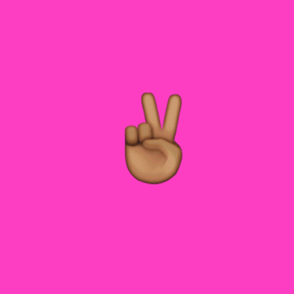

Unit 1 Drawing, Variables, Random
How can code be used as a creative and expressive medium?
Mini-Project - Custom Emoji

This year was the fifth World Emoji Day – a day to celebrate the tiny images on our phones that have transformed the way people chat online. Here are some things you need to know about those funny little pictures 👇:
Why today?
The date was fixed on 17 July because if you peek at the emojis on your Apple or Android phone, you'll see that is the date on display on the calendar emoji (📅). The origin of that date is that Apple first used it in its symbol to commemorate the date the Mac's iCal feature was first announced.
Emojis have been around since 1999
Invented by Shigetaka Kurita, the ability to send a heart symbol on early Japanese pagers is the source of all emojis. Kurita drew inspiration from marks used in weather forecasts and from kanji characters to design a set of 176 symbols that covered a range of human emotions and activities that could be used on phones in 1999. The rest is history.
"At first we were just designing for the Japanese market," says Kurita. "I didn't assume that emoji would spread and become so popular internationally. I'm surprised at how widespread they have become. Then again, they are universal, so they are useful communication tools that transcend language."
There's an awful lot more of them now
The Unicode Consortium, which oversees what is allowed to become an emoji, currently lists 1644 emojis, including smileys, people, sport, food, animals, flags and a myriad of other categories.
And we also send them a lot
Facebook has stated that every day on Facebook Messenger 900m responses sent consist of just emojis. It also says 700m emojis are included in posts on Facebook every day. The most popular emoji on Facebook in the UK is the "face with Tears of Joy" or "crying laughing" emoji 😂 - indeed English Oxford Dictionaries made it their word of the year in 2015.
Prompt
You have been selected to create a dynamic emoji in p5.js or remix a current existing emoji. Your emoji will be added to the Unicode emoji library! Draw an emoji using the shapes that we covered in this unit. Make it dynamic using built in variables and create your own variables. You can choose an existing emoji or create your own.
Requirements
- Use shapes that we covered in this unit
- Use built in variables that make your character dynamic (size or color changes with mouse position)
- Create custom variables (e.g. x position, y position, size, fill, etc…)
- Have it appear in random location or be random sizes every time play is pressed.
Writing Prompt
Write a paragraph explaining why your new emoji should added to the Unicode Consortium. In detail explain its meaning and importance.
Sample

Submit Your Emoji Report
Time to get your emoji approved for the Unicode Consortium!
Directions:
- Watch: How to make an emoji.
- Read the steps for emoji proposals in the red box.
- Look through some sample proposals here by click on one of the links on the left column.
- Write up your proposal and have a peer/teacher/friend look it over and provide feedback.